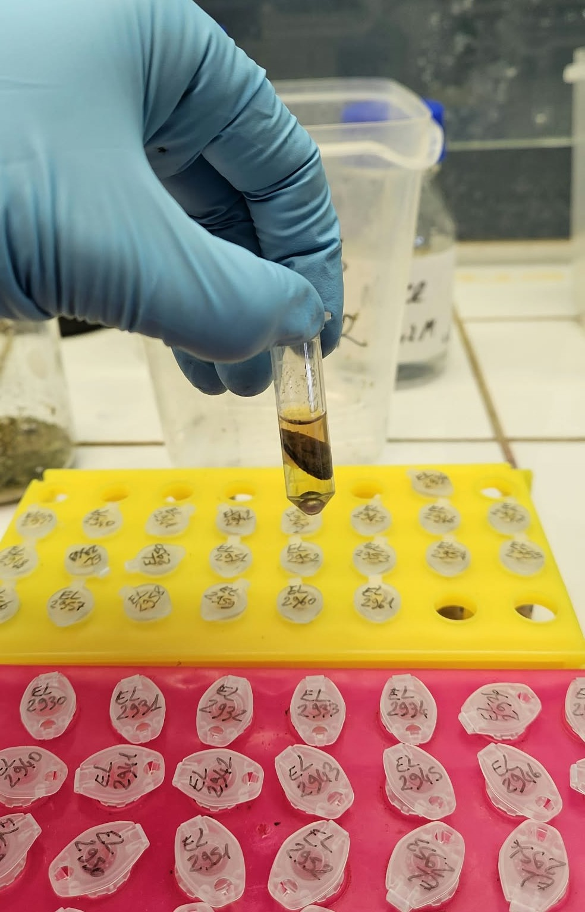

LichenScope
Independent research in lichenology
LichenScope is my independent research practice. It gives me the freedom to develop my own projects with partners both within and beyond academia.
About
I founded LichenScope in January 2026 to provide lichenological expertise in regions where it is scarce. I build on the fieldwork I began during my PhD through partnerships with universities, botanic gardens, natural history museums, botanical conservatories, national parks and other conservation organisations.
I produce validated datasets and species checklists for project partners and the wider scientific community. Where appropriate, I also publish the findings in peer-reviewed journals.
What LichenScope does
Services & activities
Field surveys
I design and carry out lichen inventories, from developing sampling strategies and arranging permits to coordinating field logistics and collecting specimens.
Morphological & molecular identification
I combine morphological and anatomical examination with DNA barcoding (ITS, mtSSU and LSU) to identify lichens at species level.
Collection development & curation
I prepare and curate voucher specimens for deposition in herbaria.
Project design & grant management
I write funding proposals, develop budgets and coordinate externally funded projects, from single-site inventories to expeditions involving multiple partners.
From fieldwork to the lab




Selected projects
Recent & ongoing work
Lichen inventory of Guadeloupe
I lead a lichen inventory on Guadeloupe’s two main islands, Basse-Terre and Grande-Terre. The project includes compiling a species checklist and establishing the first dedicated lichen collection at the GUAD herbarium. Funded by the Guadeloupe Botanical Conservatory (CBNIG), ARBIG and DEAL.
Saba Estafette Expedition — Critter Quest 2
At the invitation of the founder of the Saba Estafette Expedition, I joined Critter Quest 2 on Saba (Dutch Caribbean) and co-led its lichen expedition. This checklist is conducted in collaboration with Naturalis Biodiversity Center and the Botanic Garden and Botanical Museum Berlin (BGBM), with funding from the Sea & Learn Foundation and the Hugo de Vries Fonds.
Lichen inventory in French Guiana (upcoming)
I will lead a three-week field expedition to the Réserve naturelle nationale de La Trinité to document lichen diversity and establish a baseline dataset for the reserve.